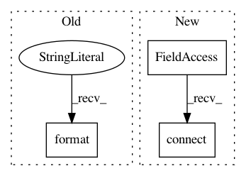

9418883d418ecccd7fe5da4dddffdc01064efb23,ilastik/workflows/carving/splitBodyCarvingWorkflow.py,SplitBodyCarvingWorkflow,__init__,#SplitBodyCarvingWorkflow#Any#Any#Any#Any#Any#,74
Before Change
arg_parser.add_argument("--split_tool_param_file", required=False)
parsed_args, unused_args = arg_parser.parse_known_args(workflow_cmdline_args)
if unused_args:
logger.warn("Unused command-line args: {}".format( unused_args ))
if parsed_args.split_tool_param_file is None:
logger.warn("Missing cmd-line arg: --split_tool_param_file")
After Change
//// Create applets
self.projectMetadataApplet = ProjectMetadataApplet()
self.dataSelectionApplet = DataSelectionApplet(self, "Input Data", "Input Data", supportIlastik05Import=True, batchDataGui=False)
opDataSelection = self.dataSelectionApplet.topLevelOperator
opDataSelection.DatasetRoles.setValue( ["Raw Data", "Pixel Probabilities", "Raveler Labels"] )
self.preprocessingApplet = PreprocessingApplet(workflow=self,
title = "Preprocessing",
In pattern: SUPERPATTERN
Frequency: 3
Non-data size: 3
Instances
Project Name: ilastik/ilastik
Commit Name: 9418883d418ecccd7fe5da4dddffdc01064efb23
Time: 2014-03-26
Author: bergs@janelia.hhmi.org
File Name: ilastik/workflows/carving/splitBodyCarvingWorkflow.py
Class Name: SplitBodyCarvingWorkflow
Method Name: __init__
Project Name: hanxiao/bert-as-service
Commit Name: beecc8291081f5d4ca9edcd57cdb4cb8309cc9d7
Time: 2018-11-15
Author: hanhxiao@tencent.com
File Name: service/server.py
Class Name: BertWorker
Method Name: run
Project Name: ilastik/ilastik
Commit Name: 02167f1683b7462ec47fce8c821a4e96f15dec9c
Time: 2012-08-16
Author: bergs@janelia.hhmi.org
File Name: ilastik/applets/pixelClassification/pixelClassificationGuiRewrite.py
Class Name: PixelClassificationGui
Method Name: setupLayers